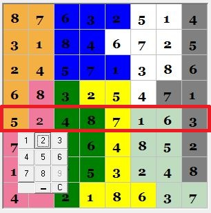
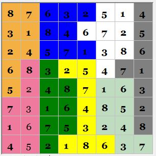

Справка
1. Выберите уровень сложности и размерность поля Неприкасаемого судоку, на котором хотите играть и начните игру.

2. В открывшемся окне нажмите кнопку начать. У вас появится поле для игры соответсвуещего выбраным параметром вида:

3. Нажмите на одну из свободных ячеек. Вы увидите меню, на котором можете выбрать некоторые значения:

4. Заметим, что в строке, выбранной ячейки, в представленном варианте не хватает лишь одной цифры - 2. Поставим это значение:
5. Заполним по анологии все свободные клетки.
Ура! Вы чемпион!

Почти готово!
Вы обучены для уровня новичка. Теперь идите и играйте, играйте и играйте... Вы получите больше знаний регулярно практикуясь.
Удачи, Чемпион!
© 2017-2018 Created by Tamkovich Denis, @jaselnik.